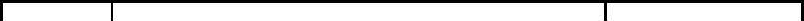
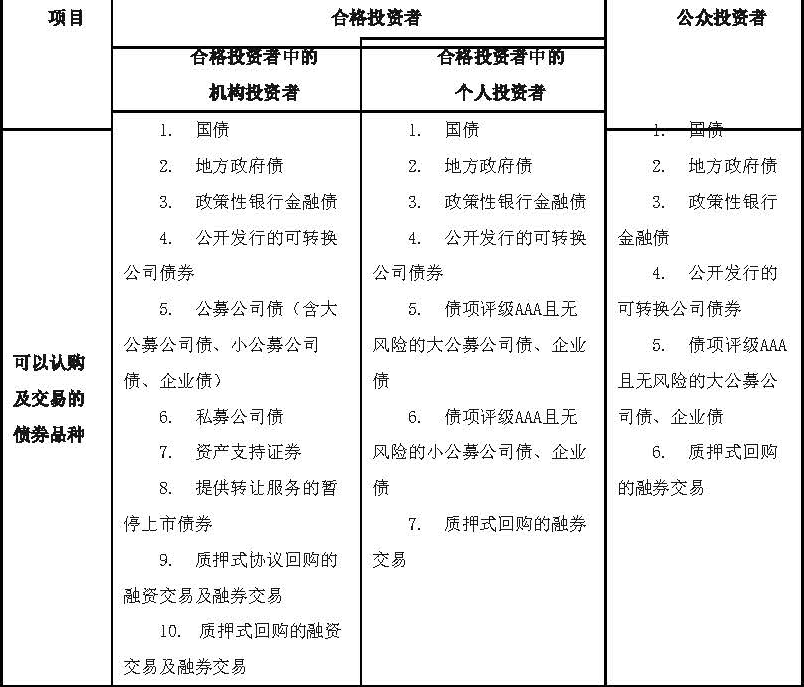

深圳证券交易所
就投资者适当性管理相关业务规则制定、修订事项答记者问
近期，深圳证券交易所（以下简称“深交所”）制定、修订了投资者适当性管理相关的系列业务规则，并于2017年6月28日向市场发布。深交所有关负责人就此次规则制定、修订事项回答了记者的提问。
一、问：深交所此次适当性管理相关规则制定、修订的背景是什么？
答：中国证监会于2016年12月12日发布《证券期货投资者适当性管理办法》（中国证券监督管理委员会令第130号，以下简称“《适当性管理办法》”），成为我国市场首部专门规范证券期货市场投资者适当性管理的部门规章，完善了适当性管理的制度体系，统一了适当性管理的基本标准，突出强调了经营机构所要承担的投资者分类、产品或服务分级、适当性匹配的义务和责任。
为落实中国证监会《适当性管理办法》相关规定，强化经营机构投资者适当性管理义务，维护投资者合法权益，本所对现行涉及适当性管理的相关业务规则进行了全面梳理，制定了《深圳证券交易所债券市场投资者适当性管理办法》（以下简称“《债券适当性办法》”），修订了《深圳证券交易所港股通投资者适当性管理指引》（以下简称“《港股通适当性指引》”）及《深圳证券交易所退市整理期业务特别规定》（以下简称“《整理期业务规定》”），上述规则将于7月1日起与《适当性管理办法》同步施行。
此次适当性管理规则制定、修订是落实“依法监管、全面监管、从严监管”要求，切实保护投资者合法权益的重要举措，对于健全投资者适当性管理基础制度和维护资本市场稳定健康发展，将产生积极和深远的影响。
下一步，本所将按照《适当性管理办法》相关要求，督促经营机构严格执行投资者适当性管理规定，加强投资者教育宣传，切实保护投资者合法权益。
二、问：深交所此次制定了统一的《债券适当性办法》，其目的和主要内容是什么？
答：在与证监会《适当性管理办法》保持一致、有机衔接的基础上，紧紧围绕防控债市风险、确保平稳发展的基本目标，同时兼顾部分债券品种的自身特点，平衡制度的统一性和灵活性，本所整合了前期分散在公司债券、资产证券化及债券质押式回购等业务规则中的投资者适当性管理有关条款，制定了统一的《债券适当性办法》。采取独立业务规则的形式有助于全面、系统地规范债券投资者适当性管理。
《债券适当性办法》明确了债券市场投资者分类，以及各类投资者可参与的债券产品范围，并将本所债券市场“合格投资者”标准与证监会《适当性管理办法》“专业投资者”相关标准保持统一。同时，《债券适当性办法》还强化了经营机构在债券市场适当性匹配、风险告知、动态跟踪评估等方面的适当性管理职责。
本所《债券适当性办法》实施后，《深圳证券交易所关于公开发行公司债券投资者适当性管理相关事项的通知》（深证会〔2015〕124号）、《关于发布〈深圳证券交易所公司债券上市规则（2015年修订）〉的通知》（深证上〔2015〕239号）第二条、《深圳证券交易所非公开发行公司债券业务管理暂行办法》（深证上〔2015〕240号）第九条、《深圳证券交易所资产证券化业务指引（2014年修订）》（深证会〔2014〕130号）第二十四条、《关于为暂停上市公司债券提供转让服务的通知》（深证会〔2014〕93号）第三条及《深圳证券交易所债券质押式协议回购交易暂行办法》（深证会〔2015〕263号）第四条将不再执行。
三、问：深交所《债券适当性办法》规定的债券市场投资者适当性管理要求，与原有规定主要有何不同？
答：主要不同在于：一是根据证监会《适当性管理办法》对合格投资者标准进行调整。根据证监会《适当性管理办法》的规定，专业投资者中的非金融机构投资者需要同时符合资产性资质和专业经历的要求。其中，资产性资质要求机构最近1年末净资产不低于2000万元且最近1年末金融资产不低于1000万元，个人金融资产不低于500万元或者最近3年个人年均收入不低于50万元；专业经历要求机构及个人具备一定的投资经历或工作经历。为落实证监会《适当性管理办法》的要求，本所《债券适当性办法》调整了合格投资者的标准，与证监会《适当性管理办法》中的专业投资者保持了一致。与本所原有规则相比，本所《债券适当性办法》增加了对非金融机构合格投资者的专业经历要求；同时，资产性资质要求也根据证监会《适当性管理办法》进行调整，主要为机构净资产从不低于1000万元调整为不低于2000万元，个人金融资产从不低于300万元调整为不低于500万元并设定了期限要求，与证监会《适当性管理办法》进行衔接。二是根据债券风险属性对个人投资者投资范围进行调整。为加强对个人投资者的保护，本所《债券适当性办法》根据债券风险属性的不同，区分了不同的投资者适格标准。具体而言，债项评级低于AAA的公募公司债券（含企业债券，不含公开发行的可转换公司债券）及资产支持证券，调整为仅允许合格投资者中的机构投资者买入；个人投资者仍可根据是否符合合格投资者的标准，继续投资大公募公司债券及/或债项评级AAA的小公募公司债券。同时，为使本所对投资者的保护更加全面、灵活，在上述标准的基础上，本所《债券适当性办法》设立了投资者适当性管理的动态调整机制。具体而言，当债项评级下调至低于AAA、发行人最近一个会计年度出现亏损、发生债务违约或者严重违法等情形时，仅允许合格投资者中的机构投资者买入债券，加强了对个人投资者的保护。
四、问：对于按照《深圳证券交易所公司债券上市规则（2012年修订）》已上市交易的存量公司债券（含企业债券），《债券适当性办法》中规定的投资者适当性管理要求是否适用？
答：适用。根据本所原规定，对于上述存量公司债券，本所根据其发行方式、交易方式及风险属性的不同，进行差异化的投资者适当性管理。为便于投资者理解，加强投资者保护，同时保证制度统一性，本所《债券适当性办法》将对上述存量公司债券统一纳入规制范围。
五、问：深交所《债券适当性办法》对债券市场投资者分类，以及各类投资者可参与的债券产品范围进行了调整，不满足适当性管理新标准的投资者该如何处理其现在持有的债券？
答：2017年7月1日起，投资者应当根据本所《债券适当性办法》的规定，在其所属投资者类别所对应的债券范围内进行投资。根据本所原有规则买入的债券，如超出《债券适当性办法》规定的投资范围，投资者可以卖出或者继续持有到期，不得再行买入。
具体而言，2017年7月1日起，各类投资者允许的投资标的范围如下：


相关法律法规、部门规章、规范性文件及本所业务规则另有规定的除外。
六、问：深交所《债券适当性办法》对经营机构的职责有何要求？
答：本所《债券适当性办法》强化了经营机构债券市场投资者适当性管理职责，规定了经营机构应当建立债券市场投资者适当性管理制度，做好交易权限的前端控制，承担确认投资者具有债券投资风险识别能力和承受能力的义务，并动态跟踪和持续了解投资者是否符合相应合格投资者的条件。
七、问：深交所此次修订的《债券适当性办法》自何时起施行？是否有相应过渡期安排？
答：为确保本所《债券适当性办法》有效落实证监会《适当性管理办法》的要求，同时，考虑到规则征求意见稿已于5月16日发布，市场对规则内容已提前熟悉并建立相应的预期，本所《债券适当性办法》将于7月1日起与证监会《适当性管理办法》同步施行。
本所将按照《债券适当性办法》的规定，对于在本所挂牌上市的债券，根据其债券类型、发行方式、评级情况及风险情况，重新认定对应的投资者范围，并于2017年7月1日起正式实行。根据本所原有规则认定的合格投资者，均需根据《债券适当性办法》的规定，在2017年7月1日之前重新进行评估认定，符合新规合格投资者标准的，方可继续买入相应投资范围的债券。
回购业务另有规定的除外。
八、问：深交所《债券适当性办法》对回购业务如何规定，如何实现与《回购风控指引》的衔接？
答：对于债券质押式回购，按照原有规则要求不变，个人投资者仅允许参与融券交易；对于债券质押式协议回购，仅允许合格投资者中的机构投资者参与融资及融券交易。
为与《中国证券登记结算有限责任公司、上海证券交易所、深圳证券交易所债券质押式回购交易结算风险控制指引》有效衔接，不满足本所《债券适当性办法》要求的投资者参与债券质押式回购融资交易、债券质押式协议回购融资融券交易的，应当于2017年12月9日前了结全部质押式回购融资交易及质押式协议回购融资融券交易，期间不允许增加回购交易未到期余额。
九、问：对于债券发行人董监高及持股超过5%的股东、资产支持证券原始权益人及其关联方，深交所《债券适当性办法》在适当性管理方面是否有特殊安排？
答：豁免相应债券的合格投资者限制。具体而言，发行人的董事、监事、高级管理人员及持股比例超过5%的股东，可以认购及交易该发行人发行的公司债券，资产支持证券原始权益人（或最终融资人）及其关联方认购及交易相应的资产支持证券,不受本所《债券适当性办法》第六条规定的合格投资者条件的限制。
十、问：深交所《债券适当性办法》第八条及第十一条规定的合格投资者中的机构投资者指的是第六条中的哪些投资者？
答：合格投资者中的机构投资者指的是第六条第（一）、（二）、（三）、（四）项规定的投资者，以及中国证监会和本所认可的其他合格投资者中的机构投资者。
十一、问：为落实证监会《适当性管理办法》有关规定，深交所除制定《债券适当性办法》外，还对港股通、退市整理期等适当性管理规则予以修订，主要修订内容包括哪些？
答：为做好与《适当性管理办法》的衔接，规范经营机构投资者适当性管理，本所修订了《港股通适当性指引》及《整理期业务规定》，主要内容为，增加港股通、退市整理期个人投资者准入资产指标的期间要求。《适当性管理办法》第十四条规定，“投资者准入要求包含资产指标的，应当规定投资者在购买产品或者接受服务前一定时期内符合该指标”。为与该条规定做好衔接，本次修订增加了个人投资者准入资产指标“一段时期内”的要求，在《港股通适当性指引》、《整理期业务规定》中，增加个人投资者相关资产需符合在申请开通权限“前二十个交易日日均”不低于一定数量的要求。
十二、问：此次深交所修订的退市整理期、港股通相关适当性管理规则，是否会对存量投资者产生影响？
答：根据《关于修改〈深圳证券交易所退市整理期业务特别规定〉涉及个人投资者准入门槛条款的通知》及《关于修改〈深圳证券交易所港股通投资者适当性管理指引〉涉及个人投资者准入条款的通知》有关规定，在7月1日前开通港股通、退市整理期股票交易权限的投资者，可继续参与交易。
十三、问：关于此次规则制定、修订，投资者可以从哪里找到相关的解读材料？
答：为引导投资者全面了解此次适当性管理相关规则制定、修订内容，本所将根据《适当性管理办法》规定，结合此次规则制定、修订内容，围绕“投资者适当性管理”的主题，编制一系列生动有趣、通俗易懂，且可广泛适用于移动端传播的漫画长图文《大小说问答系列——投资者适当性》等专题解读材料。投资者可以通过关注“深交所”微信公众号，或登录本所网站（www.szse.cn）了解。